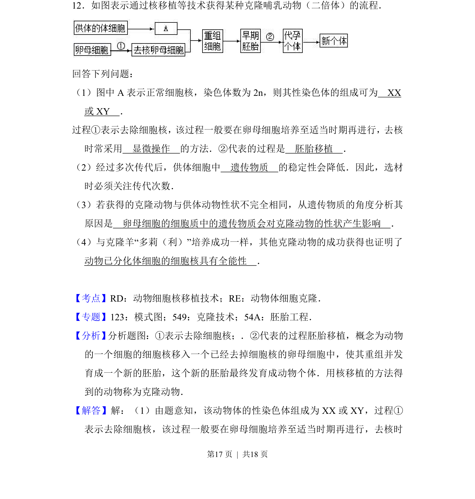
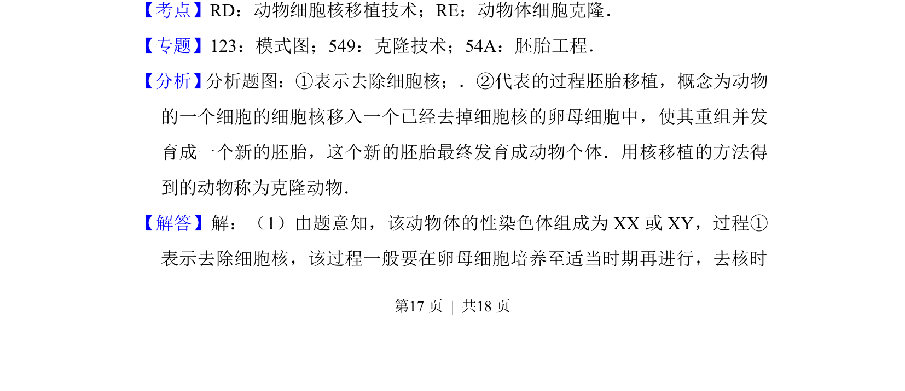
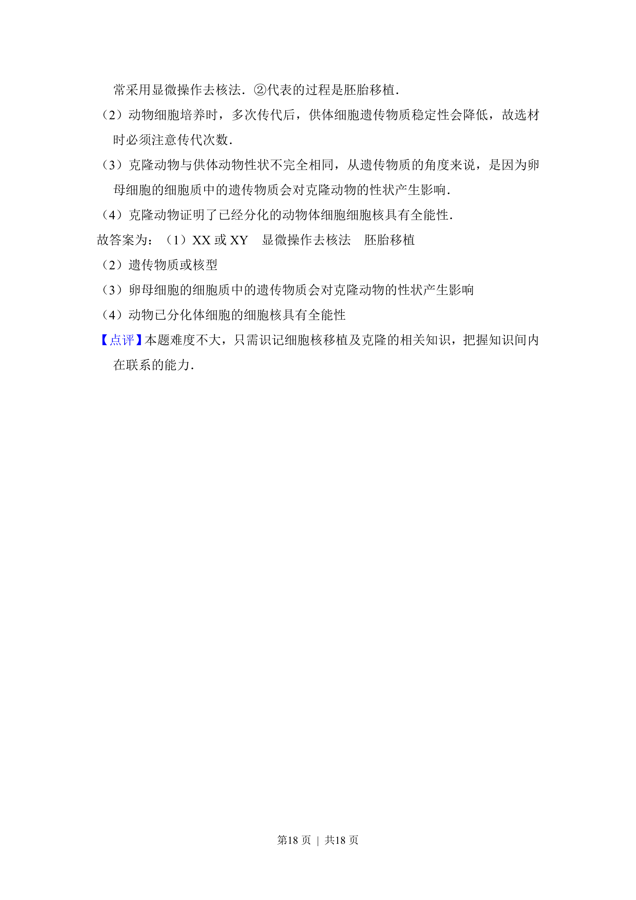

考点：动物细胞核移植技术 动物体细胞克隆 胚胎移植

该题考查动物体细胞克隆技术流程及遗传物质分析。


📄 原 PDF 第 17 页：
素材/真题/吉林/2008-2024·（吉林）生物高考真题/2016年高考生物试卷（新课标Ⅱ）（解析卷）.pdf
12．如图表示通过核移植等技术获得某种克隆哺乳动物（二倍体）的流程． 回答下列问题： （1）图中A表示正常细胞核，染色体数为2n，则其性染色体的组成可为 XX 或XY ． 过程①表示去除细胞核，该过程一般要在卵母细胞培养至适当时期再进行，去核 时常采用 显微操作 的方法．②代表的过程是 胚胎移植 ． （2）经过多次传代后，供体细胞中 遗传物质 的稳定性会降低．因此，选材 时必须关注传代次数． （3）若获得的克隆动物与供体动物性状不完全相同，从遗传物质的角度分析其 原因是 卵母细胞的细胞质中的遗传物质会对克隆动物的性状产生影响 ． （4）与克隆羊“多莉（利）”培养成功一样，其他克隆动物的成功获得也证明了 动物已分化体细胞的细胞核具有全能性 ．
【考点】RD：动物细胞核移植技术；RE：动物体细胞克隆．菁优网版权所有 【专题】123：模式图；549：克隆技术；54A：胚胎工程． 【分析】 分析题图：①表示去除细胞核；．②代表的过程胚胎移植，概念为动物 的一个细胞的细胞核移入一个已经去掉细胞核的卵母细胞中，使其重组并发 育成一个新的胚胎，这个新的胚胎最终发育成动物个体．用核移植的方法得 到的动物称为克隆动物． 【解答】解：（1）由题意知，该动物体的性染色体组成为XX或XY，过程① 表示去除细胞核，该过程一般要在卵母细胞培养至适当时期再进行，去核时